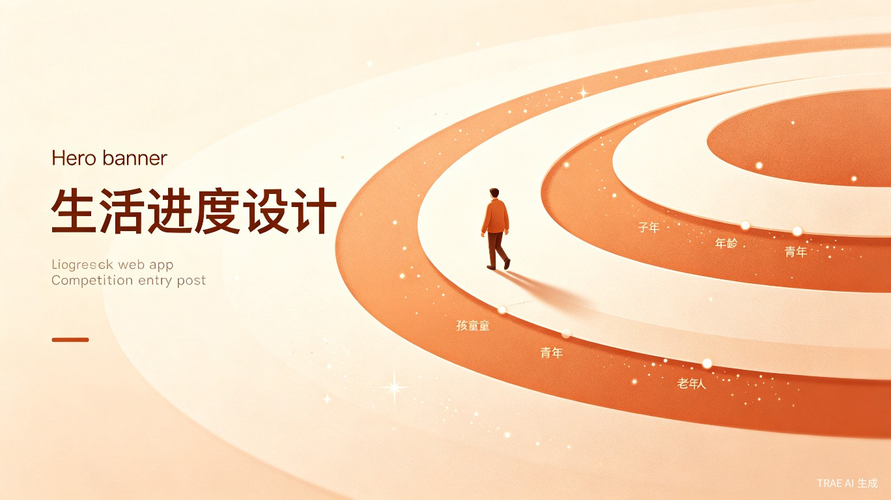

「人生进度」是一个温暖的人生记录与规划应用。它不追求功能的堆砌，而是希望成为用户生命旅程中一位安静的陪伴者 —— 记录那些闪闪发光的时刻，写下内心真实的感受，设定值得奔赴的目标，倾诉无人知晓的心事，分享照亮他人的故事。
设计理念源于对「数字生活」的反思：当大多数应用都在争夺用户的时间和注意力时，我们希望创造一个让人慢下来的空间。温暖人文主义配色、柔和的视觉动效、贴心的空状态引导，每一个细节都在传递同一个信念：每一个数字背后，都应该有温度。
记录人生中的重要时刻，按时间轴回溯那些闪闪发光的记忆
用文字、图片、视频或录音，记录生活中每一个珍贵的瞬间
设定目标，追踪进度，让每一步都朝着梦想前进
匿名或实名说出心里话，收获来自陌生人的温暖与回应
分享你的故事和经验，照亮别人的路，也温暖自己的心
暖橙、暮蓝、森绿、粉黛四种主题，匹配不同心境
不依赖任何前端框架，仅用 HTML + CSS + JavaScript 构建。这意味着极小的包体积、零构建依赖、以及在任何现代浏览器中都能流畅运行的体验。
所有个人数据存储在浏览器 IndexedDB 中，无需注册即可使用，保护用户隐私。同时支持数据导出，让用户完全掌控自己的数据。
倾诉与分享功能通过 IGA Pages 的 Serverless Functions 实现跨用户互通，让温暖的回应可以跨越屏幕传递。
完整的 ARIA 标签支持、键盘导航、焦点陷阱管理，确保视障用户和使用键盘操作的用户都能无障碍使用。
首页中央的人生进度环形图，将生命划分为童年、少年、青年、中年、老年五个阶段。用户可以看到自己在整个人生旅程中的位置 —— 不是制造焦虑，而是激发珍惜当下的动力。
以暖橙为主色调，搭配暮蓝、森绿、粉黛三种可选主题。每一种配色都经过精心调校，确保长时间使用不会视觉疲劳。
当用户第一次打开应用时，不会看到任何虚拟数据。每个模块都有精心设计的空状态页面，用温暖的文案引导用户迈出第一步。
3D 翻转卡片、涟漪按钮、渐入动画、粒子背景... 这些微交互不是为了炫技，而是让每一次操作都有恰到好处的反馈，让使用过程成为一种享受。
这个项目从最初的个人日记工具，逐步演变成一个完整的人生记录平台。在 TRAE 的辅助下，我们完成了多次重要迭代：
v1.0 — 基础日记功能，本地存储
v2.0 — 加入人生足迹时间轴、目标管理
v3.0 — 接入云端 API，实现倾诉与分享的跨用户互通
v4.0 — 生命年轮可视化、ARIA 可访问性、3D 卡片、涟漪按钮、数据导出、多主题切换
每一次迭代都围绕一个核心问题：如何让记录人生这件事变得更温暖、更自然、更有仪式感。
人生进度不是一款效率工具，也不是一个社交平台。它是一个容器，盛放你对生活的热爱、对未来的期待、对过去的感恩。
我们希望，当你打开这个应用的时候，感受到的不是催促和压力，而是温柔和陪伴。
因为每一个计划都是蓝图，每一个脚印都是记号。而你的人生，值得被认真对待。